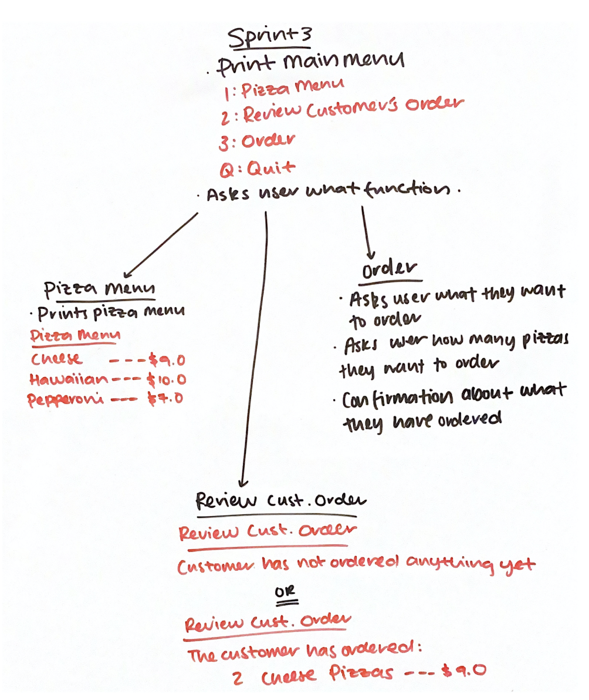

Brief
What is the program about?
This computer program that I have programmed is suitable for pizza stores. The main goal for this program is to allow customers to order through a phone (delivery charge or pick up, online receipt, cancel pizza or order, add pizza). It should be easy for the server to use when the user is saying the order quickly or is rushing. The program is user friendly and easy to use for people who are not techie. As the world is evolving, programs which allow the server to take a users order is better than writing it on paper as it allows the company to feel more up to date with the modern world.
Sprint One & Two
Aim:
This is the first and second sprint of the program. The aim is to be able to create a basic function which works and functions properly.
Plan
Sprint (Kanban) Board:
Screenshot on the far right
Sprint Planning:
Screenshot on the far right
Build
Program Code:
Screenshot of the python code on the right. May need to zoom up to see the code.
Creating and Testing Program:
In Sprint One and Two, I decided to create a basic function which allows the user to see a printed out pizza menu which holds two pizzas, order pizzas from the pizza menu and also being able to quit at the main menu. I created a mini function which prints out a pizza menu so the user can tell the customer what is in the pizza menu before ordering. The ordering function is just a basic function. It allows the user to ask what the customer wants to order. It is a basic ordering function which I will be planning to expand on it. The quit/cancel button allows the user to cancel the order when the customer no longer wants to order anything.
These are extremely important basic functions to have. I can always use the basics to improve and be able to turn it into a complex function.
Reflection
Errors and Reflect:
When I was creating Sprint One and Two, I did not create any major or minor errors. The process was created in a quick few minutes as I have planned out what I wanted to do before I started making the program.
I had asked a friend of mine to o test out the current program for me. I have attached the screen video below. I have identified a few errors which bothers me so I will be fixing them in the next sprint.
Future Steps:
After looking at the testing which my friend did, I have decided to plan for my next sprint. In the next sprint, I will need to create a search function so the customer does not order a pizza that is not in the list. The next major that I have identified, was when my friend had requested for a review on her order. The “The customer has ordered:” had printed out twice.
Checked Sprint One and Two code through the code checker
Screenshot of Sprint One Sprint or Kanban Board
Screenshot of Sprint Two Sprint or Kanban Board
Screenshot of Sprint Planning
1
2
3
4
Screenshot of Sprint One and Two Codes
Git Commit for Sprint 1&2
Testing for Sprint 1&2
Sprint Three
Aim:
The aim is to fix small bugs which can cause the whole program to crash.
Plan
Sprint Board:
Screenshot photo on the far right
Sprint Planning:
Screenshot on the far right
Sprint Three Plan:
Screenshot photo on the far right. The screenshot shows what errors i would be fixing in this sprint.
Build
Creating and Testing Program:
Screenshot of the program codes are shown on the right side of the page. You may need to zoom up to see the code.
Reflection
Reflection:
In Sprint three, I have fixed errors which could potentially cut off the program and no longer work. The errors that I fixed in this sprint, was shown in the screenshot on the far right. Six main errors needed to be fixed as quickly as possible. I didn’t put dollar signs in the review menu function which therefore made it an important error, as the numbers have to be indicated to the user and the customer that it is the price of the pizza. This could easily be confused with the number of pizza they could have ordered. The second important error that I needed to fix was needing to send proper feedback. When the customer has not ordered anything, the program must send back proper feedback saying “The customer has not ordered anything”. When I was testing out the program, the program left it as a blank page when nothing was being ordered so I decided to fix the error. when there is nothing in the customer’s order. The third error in the program, the user can put anything in the order pizza function so I decided to put a search function. The search function is the program finding the name of the pizza from the pizza menu. If the user does not enter anything from the menu, the program will say “This pizza is not in the menu. Please try again”. This will allow the user to be more aware of what they are entering into the program.
I have gotten myself to test out the program and see if there would be any mistakes. I have attached the screen video below.
Errors:
In Sprint three, there were not many errors. To fix the errors, I had used trial and error to see which worked and would not work.
As you can see, I have tested out the sprint 3 program and I have realised there's an error. Towards the end of the screen video, I wanted to end the program and I had two choices. Either Q for Quit shown in the main function or C to cancel the order which was written near the message underneath the main function. Also the "C" button to cancel the order only worked while the "Q" buttoon wasn't working. This would definitely be taken to consideration for the next sprint.
Future Steps:
For the next sprint, I am planning to create some validations so I can put some limits on how much pizza the user can order. The validation function could also be helpful for other purposes when I need to put a minimum and maximum on an order. I am planning to do validation on a string user input and integer user input. I will also definitely be improving and fixing my cancel or quit button as one of the buttons were not working.
Checked Sprint Three code through the code checker
Screenshot of Sprint Three Sprint or Kanban Board

Screenshot of Sprint Planning
Scanned Error/Bug Fixing Planning Paper
1
2
3
4
Screenshot of Sprint Three Codes
Git Commit for Sprint 3
Testing for Sprint 3
Sprint Four
Aim:
Putting limits on how many pizzas the user can order per a flavour - Validations
Plan
Sprint Board:
Screenshot photo on the far right
Build
Creating and Testing Validations:
Screenshot of the validation codes are shown on the right side of the page. You may need to zoom up to see the code.
Reflection
Reflection:
In Sprint Four, I have decided to create validations when the user is getting the customer’s order. I made the validation as general as possible so I can attach it to any functions. Validations are extremely helpful when the user is collecting information and entering them into the program. This could also prevent huge errors from happening. If the customer wants to order 5 pizzas but the server (program user) accidentally puts a zero at the end of 5, making it 50 pizzas instead of 5. I prevented this from happening by putting minimum and maximums. I have also fixed the Quit and Cancel button by only letting the user cancel the program by letting them type the "C" button instead of the "Q" button. This gives them only one choice (which is simpler for users who are indecisive than giving two choices) and allows less confusion between two buttons.
Errors:
There were no errors being made in Sprint 4. This is because I found it simple and easy to create validations.
Future Steps:
I have a couple ideas on what I could be doing as my next steps. At the moment, I am thinking of creating another function, which allows the server to be able to change the quantity of pizzas.
Screenshot of Sprint Four Sprint or Kanban Board
1
2
Screenshot of Sprint Four Validation Codes
Checked Sprint Four code through the code checker
Sprint Five
Aim:
Getting the program to allow the user or the customer to change the amount of pizza that they have ordered and also creating a multi dimension menu function.
Plan
Sprint Board:
Screenshot photo on the far right
Sprint Five Plan:
Screenshot photo on the far right. The screenshot shows what I will be creating in this sprint.
Build
Creating and Testing Program:
Screenshot of the program codes are shown on the right side of the page. You may need to zoom up to see the code.
Reflection
Reflection:
In Sprint Five, I have created a multi-dimension menu function. At the start of the main function, there is an update function which goes into another menu function which is called “Update Order”. The Update Order function includes, a review order, change order quantity, delete pizza and go back to the main menu. In this sprint, I have decided to complete the change order quantity, review the order and go back to main menu function. Maybe in the next sprint, I could finish the delete pizza function. The change order quantity is when the customer wants to change the quantity of one of their pizza from their order. For example, if the customer has ordered “5 cheese pizzas” and wants to change the quantity of “2 cheese pizzas”. The server or the user of the program will be able to use this function to change the quantity of pizza.
I have asked my friend at school to test my program and try and break it. I was extremely surprised how well she was dedicated to break my program and she actually did to the point where I had to stop it for her.
Errors:
While I was building the program for sprint 5, there were some errors in this sprint which I thought were not important enough to be put into the planning document. The errors consisted of "index out of range", formating and parameter problems so I have decided not to put the screenshots up on the document.
When my friend was trying to break my program, she has managed to break it twice. In her first try, she was trying to update the order and delete a pizza when she has not ordered anything. This caused me to stop the code for her as the program was going around in a loop. In her second try, when my friend was going to order some pizza her second time. The program would no longer accept any more order which this was the first time it has happened so it started saying entering messages saying "This pizza is not in the menu. Please try again". I found this extremely weird as they were on the list. I will be fixing those mistakes in the next sprint or the print after.
Future Steps:
In Sprint Six, I am planning to create a customer details function which holds the customer’s information. If the customer wants their order to be delivered, it will ask for their address, phone number and name. If the customer wants their order to be picked up, the program should only ask for their name and phone number.
Checked Sprint Four code through the code checker
Git Commit for Sprint 5
Screenshot of Sprint Five Sprint or Kanban Board
Screenshot of the planning for the Update function
Screenshot of Sprint Planning
1
2
3
4
5
6
7
8
Screenshot of Sprint Five Validation Codes
Testing for Sprint 5
Sprint Six
Aim:
The program needs to be able to collect customer details for the pizza order also have a working delete pizza and finalise order function.
Plan
Sprint Board:
Screenshot photo on the far right
Sprint Six Plan:
Screenshot photo on the far right. The screenshot shows what I will be creating in this sprint. I have also attached another completely different planning as I wanted to give myself two choices. This would be called "Planning 2".
Build
Creating and Testing Program:
I have decided not to put any of the screenshots of my code up. This is because there will be a lot of screenshots.
Iterative Decisions
In sprint 6, I had planned two completely different plans. I wanted to give myself some choices. Planning 2 was what I wanted to do, since I did not want to have similar programs as everyone in the class while planning 1 is exactly similar to what everyone else is doing. I chose planning 1 because I did not want to be too different.
Planning 2
Git Commit for Sprint 6 (Part 1)
Screenshot of Sprint Six Sprint or Kanban Board
Screenshot of Sprint Planning
Screenshot of the error
Git Commit for Sprint 6 (Part 2)
Reflection
Reflection:
In this program, I have decided to create a customer details function which asks the user whether they would like to pick up or get their order delivered. Once they have chosen how they would receive their order, the program would ask them questions to collect the customer’s details. If the customer chooses to pick up their pizza order, the program would only ask for the order name and phone number. If the customer decides to get their order delivered, the program would ask the customer their order name, phone number and their home address. After finding out if the customer would like their order to be delivered or picked up, it will help me create the finalise order. The finalise order contains a formatted receipt which also tells the customer how much they have spent on their order, the GST and also if there are any additional costs. The additional costs contain delivery fee like 3 dollars. After the customer has finalised their order, it will go straight into a new order for the next customer. This will let the user/server to stress less when it is busy so they don’t need to stop the finished order to be able to start a new one. I have also finished creating the delete pizza code in the Update order function. This is extremely helpful and also crucial to have in this program.
I have given my program to a friend and told them to try and break it. I have attached the video below the sprint. In the video, you will realise that there will be a test function printed out when the tester was clicking into the review function. Please do ignore this as I forgot to remove the function.
Errors:
There were some errors in this sprint but they were not important enough to put into the planning document. The errors consisted of "index out of range", formating and parameter problems.
There was one specific error which took a while to solved but without the teacher's help, I would not have solved the error. I have attached a screenshot of the error so it would be easier to explain. When I was testing my delete pizza function, the program had asked me to either remove the order and start again or remove a pizza. I decided to remove a pizza from the order list. Once I have clicked on to what I wanted to delete, it threw an error and stopped the whole program. The only reason why the program stopped because the pizza I wanted to delete was already deleted before the confirmation code was printed. This was easily fixed by moving the delete code below the confirmation message.
Future Steps:
In the next sprint, I am thinking of making the receipt more detailed by making the customer details with the receipt. There’s been a massive error that has been occurring in all of the sprints. I’m planning to fix it in the next sprint. There is a duplicate entry problem which means the program will allow the customer to keep adding the same pizza even though it has been added in the order. Therefore, it will leave a duplicate pizza in the order.
Sprint 6 Testing - Person 1
Sprint 6 Testing - Person 2
In the Sprint 6 Testing - Person 2, my friend wanted to break my code. Throughout the screen record, there were many easy validation errors which I could have improved on. For example, when the program asked for confirmation if the customer wanted to add another pizza. The user had decided to type in “y” instead of “yes”. I will be fixing this in my next sprint.
Sprint Seven
Aim:
To be able to create a more personalised receipt and also being able to stop the duplicate entry problem.
Plan
Sprint Board:
Screenshot photo on the far right
Sprint Six Plan:
Screenshot photo on the far right. The screenshot shows what I will be creating in this sprint.
Build
Creating and Testing Program:
I have decided not to put any of the screenshots of my code up. This is because there will be a lot of screenshots.
Git Commit for Sprint 7
Checked Sprint Seven code through the code checker
The code checker says there are 9 style errors. They are not errors because I broke the code up in pieces because it can not read over 1000 characters.
Screenshot of Sprint Seven Sprint or Kanban Board
Screenshot of Sprint Planning
Screenshot of the error
Reflection
Reflection:
In Sprint 7, I have decided to improve on my receipt by making it more personalised. This will let the customer know that this receipt is being made specifically for them and it also helps them remember what address they had put down for the order to be delivered. There is also a duplicate entry problem throughout the sprint so I decided it would be good to fix it in this function. I decided not to improve on the “YES” and “Y” choices. This is because It is not a big deal compared to the duplicate entry problem. I’m thinking of doing the “YES” and “Y” problem later in the next function.
I gave my program to my sister to test out, I thought my duplicate entry was working in all functions. It ended up not working when my sister went for another add to order and ordered the same pizza in her order list and there was no confirmation about a duplicate. The duplicate entry only works when the user orders two pizzas right after each other. I have attached the screen video below named 'Testing video 1'.
I decided to give the testing another go to see if it was a bug in the program. It ended up working. I will be attaching screen video below and it would be named 'Testing video 2'.
Errors:
When I was trying to improve on the receipt to make it more personalised. An error had occurred. I have taken a screenshot and placed it on the right side named “Screenshot of the error”. The error had occurred and said “list index out of range”. In the previous sprint, when the customer wanted their order to be delivered the program would ask them for their contact details. I decided to format the details so their contact details would print. Since the delivery and pick up details are not the same. This caused an index range in the receipt and caused my program to stop.
Future Steps:
In the next sprint, I am planning to improve on the “YES” and “Y” choices so the server (user of the program) has more choices. This will also be a shortcut for the user if the customer is ordering their pizza quickly. I still have not gotten a specific plan for the next sprint.
Testing video 1
Testing video 2
Conclusion
In all of the sprints (1, 2, 3, 4, 5, 6 & 7), they are all committed into Github which helps keeps the project backlog updated everytime. If I mess up my code in the current sprint, I can always restore the sprint with the previous sprints. This is a good backup plan but if you do not commit the program frequently. This could be a dangerous plan as if you stuff up the current sprint and have no previous sprint to backup on. There could be a possibility that you would need to restart the whole program from scratch.
Whenever I am git committing, I always write a small statement explaining what I did and why I needed to commit. This helps me to know what each commit was about instead re-reading through all my codes again and trying to understand it.
When a problem or an error message shows up on my program, I always have two different way/techniques of solving. This is important as you can not stick to a one way stream. You always have to have more than one way of trying to solve something. There are many different techniques like validations, update function and error management for duplicate pizza.
I personally like creating my code as general as possible. For example in my menu, I have created a menu list so the prices can be changed in one setting instead of getting the programmer to change the prices in different settings which can be extremely annoying and unhelpful. Creating a function that is general as possible can be extremely helpful and a smart way of programming.
Relevant Implications
Functionality:
Screenshot A
Screenshot B
Functionality is about having an application which works properly. It is a computer program that doesn’t have any bugs and navigates consistently. For a computer program that hardly doesn’t have any bugs, it is tested often for any errors/bugs and also being test recorded.
When I was creating the last sprint of the Marsden pizza program, I found a few bugs/glitch. In the main function, when the user puts in a letter. It will match the letter, with the letter that is shown in the main menu. For example: in Screenshot A, the user has put in the letter “A” and it will send them to the “Add Order” function. While in Screenshot B, the user entered “asdfgh” and it sent them to “Add Order” function. This is because the program takes the first letter of the word as the answer instead of the whole word.
The program must function and load quickly for the user to use, so far I have identified a bug in my program. This shows my program is not good functionality wise. I have also tested my program on different browsers & devices and there were no problems loading my program there.
Usability:
Usability is making sure that the program is effective and efficient for the user when they are using mine or any other programs. They should be able to use it easily without any problems or having to ask any questions. The user should also be able to understand what the program is meant to do or when the program is communicating to the them.
There are 10 main usability heuristics:
1. Visibility of System Status
2. Match between System and the Real World
3. User Control and Freedom
4. Consistency and Standards
5. Error Prevention
6. Recognition rather than recall
7. Flexibility and Efficiency of use
8. Aesthetic and Minimalist Design
9. Help user Recognise, Diagnose and Recover from errors
10. Help and Documentation
In my program, I have used ‘Visibility of System Status’. ‘Visibility of System Status’ is about keeping the user informed about what is going on by using appropriate feedback. I have used the first usability heuristics by using messages in my program like “— Returning to Main Menu —“ and “— A new order is starting now —“. This helps the user (server) to know whether the program is loading or not.
In the second usability heuristics, I have used ‘Match between System and the Real World’. This heuristics is about adjusting the system/program to speak the user’ language, with words or phrases. In my program, I have used a few examples. When a customer has ordered too much of a specific flavour of a pizza, the program would send a confirmation message saying “The number you have entered is too large. Please try again”. This would allow the user to understand rather than sending them a confirmation message saying “Error 101”
The next usability heuristics is ‘User Control and Freedom’. User Control and Freedom is about giving an exit choice when the user chooses a system function by mistake. In my program, I have shown this. If the user accidentally goes into the Update function there is a way of getting back in the main function by typing the letter ‘E’. This gives the user freedom and also allows them to roam around in the program without having to be worried about their next steps.
‘Recognition rather than recall’ is about minimising the user’s memory load by making options visible. The customer should not have to remember information from one part of the dialogue to another. In each functions of the update function, I have gotten the program to print out the customer’s order list so they don’t have to memorise what they have ordered. This would make it easier for the customer to order pizza on the program.
Cultural Implications:
Cultural Implications is about making sure the digital product is culturally appropriate. Here in New Zealand, we have a native language called Te Reo Maori. I have not used any pizza name that uses words from the Maori language. I decided not to use anyone’s culture in my pizza program. If I do intend to use someone’s culture in the future for any program, I will research the background information of the culture so I can avoid mistreating their culture. This is important as we want all cultures treated fairly.
Future Proofing:
Future Proofing should be easy to maintain. When a program is given to another programmer , they should be able to adapt and add new features. It should also be easy to change. In my program, I have added comments in each function so if a new programmer was to add to my program it should be easy to do so. I have also created a basic function structure so it would be easier for the programmer to extend it. I made my function as general as possible so if there is major change, I should be able to change it in a small area of the code and it shouldn’t effect the whole program or cause it to crash. My program is extremely easy to expand and be improved on.